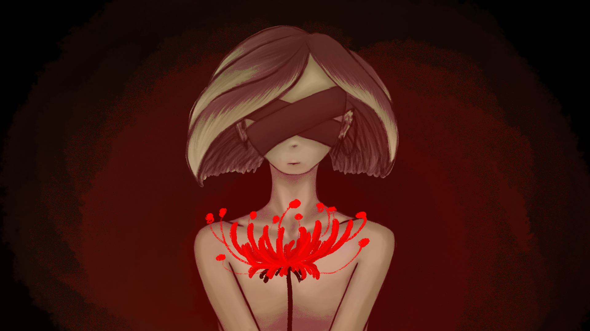

As my portfolio had been created a few years ago, I've created this section for my more current works, as well as ones that may not have made the cut, but that I still want to share.
This is a personal artwork I made while exploring Adobe Photoshop, which is a tool I don't often use. The flower in the artwork is a red spider lily, also known as lycoris radiata, part of the amaryllis family. While a symbol of death, it also happens to be my favourite flower.

This is also a personal project of mine, which I've yet to fully explore. The character is meant to be part of a game, which hasn't been fully realized. It was made in Adobe Illustrator, which is what I usually gravitate to when making illustrations, as the name may imply. I also made the font in the card, which is something I rather enjoy doing. The fonts on this website, if everything runs as planned, are also fonts that I developed myself.

This is a work in progress for a set of cards I wanted to design. Minimalistic, symmetrical, with a black background, while it may not be the most practical of cards, a set of cards that I made myself as an artist would be nice to have.